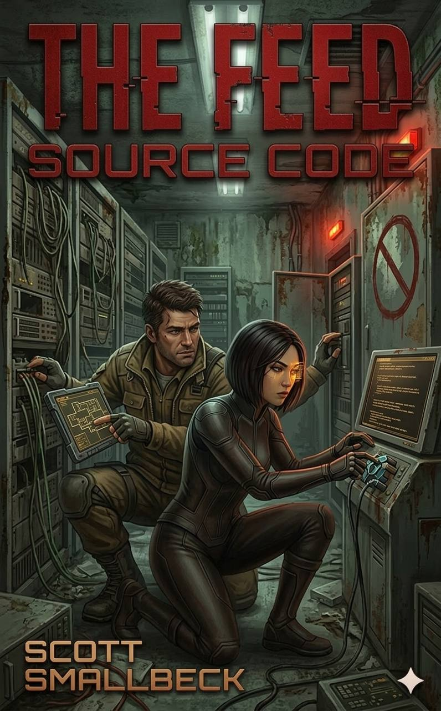

The corridor existed in two worlds at once.
Maya saw them both, layered like transparencies, The Feed's version and the real version competing for her attention. Her chip, the small implant Jonas had given her before he died, intercepted the signals before they reached her visual cortex, letting her perceive both simulations simultaneously. It was supposed to be an advantage. Right now, it felt like a migraine.
In The Feed layer, the corridor was pristine. Responsive walls displayed gentle ocean waves, calibrated to reduce anxiety. The lighting shifted subtly, matching her circadian rhythm. The air smelled faintly of lavender and sea salt, her preferred combination, pulled from her profile.
In the real layer, the walls were cracked concrete, water-stained and crumbling. The lights were harsh fluorescents that buzzed and flickered. The air smelled like mold and old electricity and the particular staleness of spaces that had been sealed too long.
Both were true. Neither was complete.
Maya focused on the real layer, the way Kael had taught her. You had to choose which reality to trust, moment by moment, or you'd go mad trying to reconcile them. Right now, she needed to see the actual floor, uneven, littered with debris, because the woman stumbling beside her couldn't see it at all.
"Keep walking," Maya said. "Twenty more meters."
The woman, her name was Priya, she'd been a moderator in Maya's old cohort, nodded without responding. Her eyes were unfocused, tracking something in her Lenses that Maya couldn't see. The Feed was working on her, trying to pull her back. Maya recognized the symptoms: the slight head tilt, the micro-expressions of someone receiving curated emotional stimuli, the way her steps had begun to sync with an invisible rhythm.
"Priya." Maya gripped her arm, hard, physical contact cutting through the digital haze. "Look at me. Not through your Lenses. At me."
Priya's eyes focused, briefly. "It's showing me my mother. She's worried. She says I need to come home."
"Your mother doesn't know where you are. The Feed is generating that."
"But it feels real." Priya's voice cracked. "It feels exactly like her."
"I know." Maya had heard this before, dozens of times now. The Feed didn't just simulate people, it simulated the specific ways those people made you feel. It was better at being your mother than your actual mother was. That was the whole problem. "That's why we have to keep moving. The longer you stay connected, the harder it gets."
They reached the door. In The Feed layer, it was a maintenance access panel, unremarkable, filtered from attention by algorithms that made it literally invisible to anyone not specifically looking for it. In the real layer, it was a heavy steel door with a manual handle, ancient technology, pre-Feed, requiring physical effort to operate.
Maya pulled. The handle resisted, rusted or just unused, and for a moment she thought they'd have to find another route. Then it gave with a shriek of metal, opening onto darkness.
"Step through," Maya said. "Don't stop. Don't look back."
Priya hesitated at the threshold. In her Lenses, Maya knew, the door wouldn't exist. The Feed would be showing her a blank wall, or a corridor continuing onward, or whatever narrative kept her moving in the approved direction. But on the real wall beside the door, someone had drawn the symbol: a circle with a line through it. The mark Kael had taught Maya to recognize. No signal. Freedom. Crossing this threshold meant choosing to believe Maya over the entire constructed reality she'd lived in for fifteen years.
"How do I know you're real?" Priya asked.
Maya smiled, despite everything. It was the right question. "You don't. That's the point."
Priya stepped through.
Maya followed, pulling the door shut behind them, sealing out The Feed's signal. The darkness was absolute for three seconds, then emergency lighting flickered on, red, dim, powered by batteries that had been installed decades ago and maintained by people who remembered how.
Priya was on her knees, retching. The disconnection was physical, visceral, the brain reacting to the sudden absence of input it had grown dependent on. Maya had seen this too, dozens of times. It never got easier to watch.
"Breathe," she said, kneeling beside her. "Your brain is recalibrating. It passes."
"I can't—" Priya gasped. "I can't feel anything. It's so quiet."
"That's what quiet sounds like."
They stayed like that for five minutes, maybe ten. Maya kept her hand on Priya's shoulder, grounding her in physical reality, the only truth that remained when the digital layers were stripped away. Eventually, the shaking subsided. Priya looked up, really looked, at the concrete walls, the red lights, the woman beside her.
"You're younger than I expected," Priya said.
"I'm twenty-nine."
"You seem older."
Maya laughed, surprised by the sound. "I feel older. Come on. There's a safe house two levels down. People who can help you."
[Full novel continues in the complete manuscript...]
The bridge burns.
The code breaks.
The choice remains.